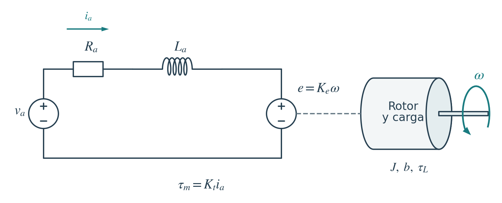
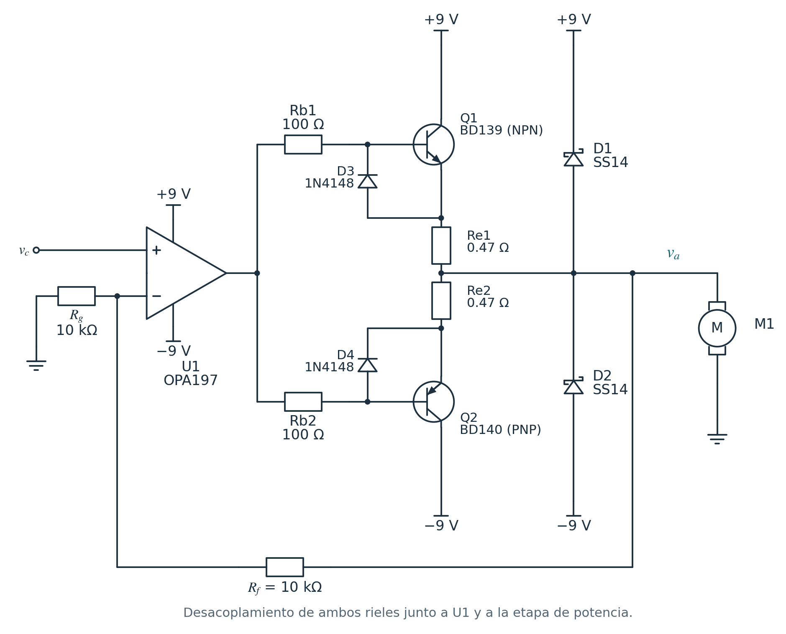
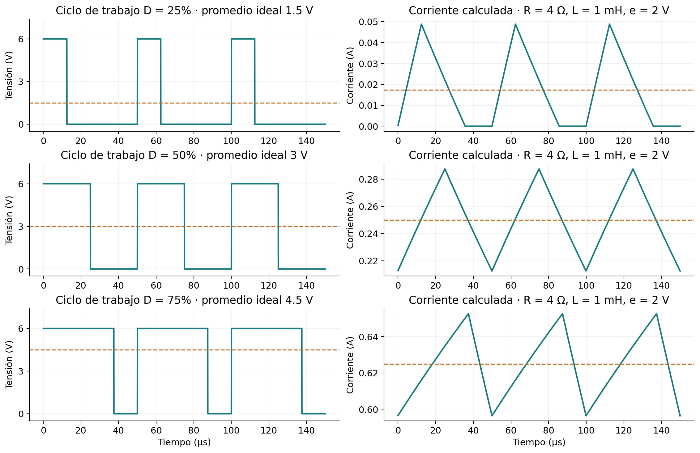
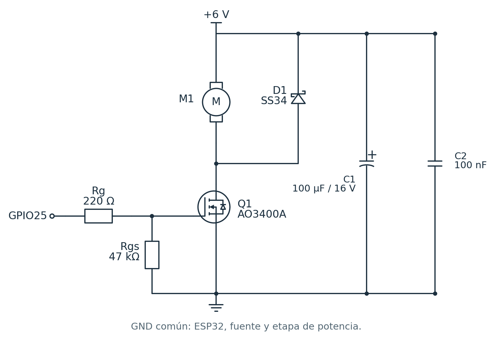
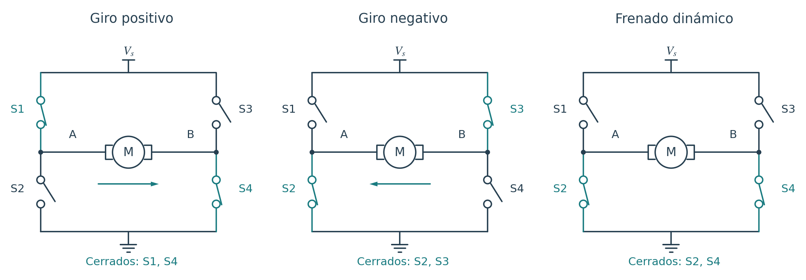
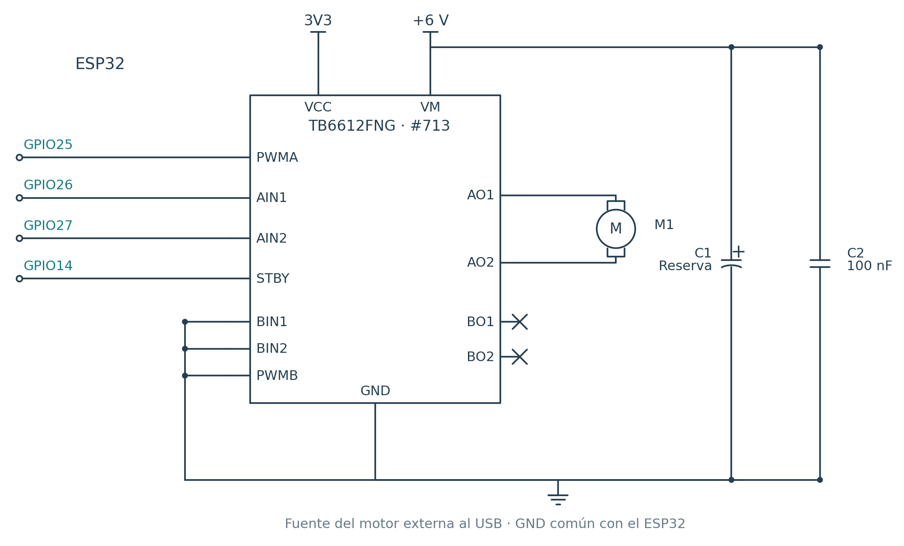
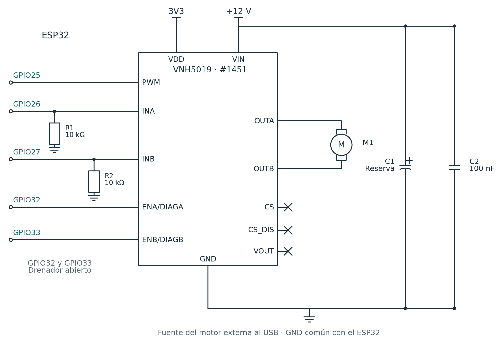

Mecatrónica
Control de motores de CD
Tensión, corriente y sentido de giro, con circuitos analógicos y proyectos para ESP32
Gobernar un motor de corriente directa requiere relacionar la orden del controlador con la tensión y la corriente que recibe el devanado. Esa relación determina el par, la velocidad, el calentamiento y la respuesta ante una carga. Este tutorial desarrolla el modelo de un motor con escobillas e imanes permanentes y estudia tres recursos para accionarlo: un amplificador lineal con opamp y transistores complementarios, la modulación por ancho de pulso y el puente H. A partir de esos fundamentos se construyen ejemplos en C++ para ESP32 y PlatformIO, desde un MOSFET para giro unidireccional hasta módulos TB6612FNG y VNH5019 para motores de distinta capacidad de corriente. También se explican la inversión del giro, el frenado, la selección de la etapa de potencia y la diferencia entre ordenar una tensión y regular una velocidad.
Qué significa controlar un motor de corriente directa
Una banda transportadora debe mantener su avance cuando recibe una pieza; la rueda de un robot necesita arrancar, cambiar su esfuerzo e invertir el giro; una bomba dosificadora debe responder de manera reproducible a una orden. En todas estas aplicaciones, el motor convierte energía eléctrica en movimiento, pero el resultado depende tanto de la carga como de la electrónica que lo alimenta. Por ello, antes de elegir un circuito o escribir un programa conviene distinguir qué magnitud se desea modificar y cuál se puede medir.
Un motor de corriente directa, abreviado CD o DC por la expresión inglesa direct current, puede construirse de distintas maneras. Aquí estudiaremos el motor con escobillas e imanes permanentes, habitual en pequeños accionamientos y motorreductores. Su estator, la parte fija, proporciona el campo magnético, mientras que el rotor contiene devanados que producen un par o esfuerzo de giro al circular corriente. Las escobillas y el conmutador cambian internamente la conexión de esos devanados conforme gira el eje, de modo que el par mantenga su sentido.
El motor presenta dos terminales de potencia. Invertir la corriente de armadura invierte el par, aunque un rotor que ya está girando primero debe desacelerar antes de cambiar de sentido. Esta descripción corresponde al motor de imanes permanentes; un motor sin escobillas o BLDC necesita conmutación electrónica de sus fases, y un motor con devanado de campo requiere considerar también cómo se alimenta ese campo.
La etapa de potencia, también llamada driver, recibe una orden de baja potencia y entrega al motor la energía procedente de una fuente. El microcontrolador establece esa orden, pero sus terminales no suministran la corriente del devanado. Estudiaremos primero una etapa analógica que reproduce una tensión continua, después la conmutación por PWM y finalmente el puente H que permite aplicar ambas polaridades con una sola fuente. El PWM puede utilizarse dentro de un puente H; uno describe la modulación temporal y el otro la disposición de los interruptores de potencia.
La tensión produce corriente y la corriente produce par
Para comprender el efecto de cada etapa necesitamos un modelo del motor. La Figura 1 representa la armadura, el conjunto de devanados del rotor, mediante su resistencia \(R_a\), su inductancia \(L_a\) y una tensión inducida \(e\). La inductancia expresa la oposición a cambios rápidos de corriente; la tensión inducida aparece al girar el rotor y se denomina fuerza contraelectromotriz. Tomando una polaridad de referencia para la tensión \(v_a\) y la corriente \(i_a\), la ecuación eléctrica es
La velocidad angular \(\omega\) se expresa en radianes por segundo y \(K_e\) relaciona esa velocidad con la tensión inducida. Si el flujo de los imanes permanece aproximadamente constante, el par electromagnético es proporcional a la corriente,
Aquí \(K_t\) es la constante de par, \(J\) la inercia equivalente referida al eje, \(b\) un coeficiente de rozamiento viscoso, \(\tau_L\) el par de carga y \(\theta\) la posición angular. El signo de \(\tau_L\) debe corresponder al convenio elegido; en los ejemplos de giro positivo se toma como un esfuerzo resistente. En unidades SI coherentes, \(K_t\) y \(K_e\) tienen el mismo valor numérico, aunque sus unidades son distintas.

Cuando la velocidad y la corriente se estabilizan, las derivadas se anulan. Sustituyendo la ecuación mecánica en la eléctrica obtenemos
Esta expresión muestra por qué una tensión constante no garantiza una velocidad constante. Si aumenta el par resistente, la velocidad disminuye; al disminuir la fuerza contraelectromotriz, aumenta la corriente y el motor desarrolla más par. Para recuperar exactamente la velocidad anterior debe modificarse la tensión aplicada mediante un controlador que utilice una medición del movimiento.
El arranque y el bloqueo fijan exigencias diferentes
Al arrancar, \(\omega=0\) y la fuerza contraelectromotriz todavía no limita la corriente. Esta no salta instantáneamente porque existe inductancia, pero puede crecer con rapidez. Si el eje permanece bloqueado y se aplica una tensión constante, el modelo conduce a
La primera relación omite las caídas en escobillas y conexiones; la segunda expresa el calentamiento resistivo, con \(I_{\mathrm{RMS}}\) como valor eficaz de corriente. Un motor que consume 200 mA girando libremente puede requerir mucho más durante el arranque o un atasco. La corriente sin carga sirve para caracterizar pérdidas, pero la selección del driver debe considerar también corriente de trabajo, arranque, bloqueo y duración de cada condición.
Control analógico con opamp y transistores complementarios
Una forma de modificar \(v_a\) consiste en utilizar un amplificador de potencia lineal. Su salida sigue de manera continua una señal de mando \(v_c\), sin conmutar intencionalmente entre dos niveles. Un amplificador operacional, u opamp, puede comparar tensiones con precisión, pero su corriente de salida suele ser insuficiente para un motor. Una pareja de transistores complementarios permite aumentar esa capacidad de corriente.
La Figura 2 combina un transistor NPN BD139 y un PNP BD140 en una etapa push-pull. El NPN proporciona corriente desde el riel positivo y el PNP permite extraerla hacia el negativo. Sus emisores se conectan al nodo de salida mediante resistencias de \(0.47\ \Omega\). El otro terminal del motor permanece a masa, por lo que una alimentación simétrica permite aplicar tensiones positivas o negativas al devanado.
Cada transistor bipolar tiene una base, un colector y un emisor. La base recibe la excitación del opamp y permite controlar una corriente mayor entre colector y emisor. En este montaje, los colectores van a los rieles de alimentación y los emisores entregan la corriente al nodo del motor; la pareja amplifica la capacidad de corriente de la salida del opamp.

La conexión de realimentación es decisiva. El opamp compara \(v_c\), en su entrada no inversora, con una fracción de la tensión que realmente recibe el motor. Ajusta la excitación de las bases hasta aproximar ambas entradas. Mientras el conjunto conserva margen de tensión, corriente y estabilidad, la ganancia resulta
Con \(R_f=R_g=10\ \mathrm{k\Omega}\), una orden de \(+2\) V solicita aproximadamente \(+4\) V al motor y una de \(-2\) V solicita \(-4\) V. La potencia procede de los rieles de ±9 V; la entrada de mando solo entrega una señal. Las resistencias de base de 100 Ω limitan corrientes transitorias y ayudan a desacoplar las bases de la salida del opamp.
Esta realimentación regula la tensión de salida, pero no mide el eje. Aunque \(v_a\) siga correctamente a su consigna, la velocidad todavía puede cambiar cuando varía la carga, como mostró el modelo del motor. Para regular el movimiento se necesita un lazo que incluya esa medición.
Qué ocurre al cruzar por cero
Un transistor bipolar necesita cierta tensión entre base y emisor antes de conducir de manera apreciable. Con las bases excitadas conjuntamente, alrededor de cero puede existir un intervalo en el que ninguno conduce con suficiente corriente. Esta distorsión de cruce es característica de la etapa clase B. La realimentación tomada desde \(v_a\) permite que el opamp compense buena parte de esa caída; tomarla antes de los transistores dejaría sus errores fuera del lazo.
La corrección no vuelve ideal al circuito. La ganancia y el ancho de banda del opamp son finitos, el motor introduce una carga inductiva y las capacitancias de los transistores afectan la estabilidad. En una implementación deben comprobarse las formas de onda y la compensación con la carga real. También puede utilizarse una polarización clase AB para reducir el cruce, pero esa modificación requiere controlar la corriente de reposo y su variación térmica; no basta con agregar diodos sin revisar el diseño.
Corriente de base, disipación y protección
La corriente del motor exige corriente de base al opamp. Si \(\beta\) es la ganancia de corriente del transistor activo, una estimación inicial es \(I_B\approx I_a/\beta\), empleando un valor conservador de \(\beta\), no uno típico favorable. El OPA197 admite alimentación de ±9 V, pero ni su capacidad de salida ni los máximos absolutos de los BD139/BD140 equivalen a una especificación de corriente continua del circuito completo.
Como banco inicial puede considerarse un motor cuya corriente a las tensiones de ensayo no supere unos 150 mA de trabajo y 200 mA de bloqueo, con limitación de corriente en la fuente. Son condiciones propuestas para el ensayo, no prestaciones garantizadas de cualquier montaje. Deben revisarse el área de operación segura de los transistores, la temperatura, la capacidad de excitación de U1 y el margen de salida bajo carga.
En giro positivo y con corriente positiva, la disipación aproximada del transistor superior es
Con \(V_+=9\) V, \(v_a=4\) V e \(I_a=0.15\) A, se disipan aproximadamente 0.75 W en ese transistor, mientras el motor recibe 0.60 W eléctricos. El caso negativo es análogo para Q2. El encapsulado y el disipador deben evacuar ese calor. La eficiencia disminuye especialmente cuando la tensión del motor es pequeña frente a la alimentación y la corriente sigue siendo alta.
D1 y D2 ofrecen caminos hacia los rieles para las excursiones inductivas de la salida; D3 y D4 limitan la polarización inversa entre base y emisor. Cada riel necesita desacoplamiento local, por ejemplo 100 nF junto al opamp y capacidad de reserva junto a la etapa de potencia. Si el motor devuelve energía, la fuente y los condensadores deben poder absorberla o debe existir un circuito de limitación del riel. Estos diodos no constituyen un limitador de corriente del motor.
Para gobernar esta etapa desde un ESP32 hace falta acondicionar la señal analógica. El convertidor digital-analógico, o DAC, del ESP32 clásico entrega una tensión unipolar; no produce directamente una orden negativa. Una etapa de desplazamiento y escala puede generar, por ejemplo, \(v_c=k(v_{\mathrm{DAC}}-V_{\mathrm{ref}})\). La referencia y la ganancia se eligen según el recorrido deseado y se calibra el cero. Por esa necesidad de acondicionamiento y por las pérdidas de la etapa lineal, resulta útil estudiar una alternativa basada en conmutación.
PWM para modificar la tensión media
La modulación por ancho de pulso, o PWM, conmuta la alimentación rápidamente y modifica la fracción de tiempo durante la que se aplica. Si el periodo es \(T\), el tiempo de conducción es \(t_{\mathrm{on}}\) y la frecuencia es \(f\), definimos el ciclo de trabajo \(D\) mediante
Cuando la tensión conmuta idealmente entre \(V_s\) y cero durante un periodo completo,
Así, una alimentación de 6 V con \(D=0.5\) produce una tensión media ideal de 3 V, pero la tensión instantánea sigue siendo pulsante. La inductancia suaviza la corriente y la inercia suaviza la velocidad, en grados que dependen del motor y de la frecuencia. El par medio depende de la corriente media, mientras que el calentamiento resistivo depende de su valor eficaz; por eso también interesa cuánto oscila la corriente dentro de cada periodo. La Figura 3 muestra esas diferencias con señales y corrientes calculadas.

La aproximación \(\overline{v_a}=DV_s\) debe relacionarse con el circuito utilizado. Durante la recirculación por un diodo, la tensión puede ser ligeramente negativa; si se abre el circuito después de extinguirse la corriente, el motor conserva su fuerza contraelectromotriz. También existen caídas en transistores y cables. El valor medio ideal explica la modulación, pero no sustituye el análisis de los caminos de corriente.
La frecuencia y el ciclo de trabajo son decisiones distintas. Aumentar \(D\) modifica la tensión media; aumentar \(f\) reduce el tiempo disponible para que cambie la corriente, aunque eleva las pérdidas de conmutación. En estos ejemplos se utilizan 20 kHz, compatibles con las etapas elegidas. El comportamiento acústico y térmico debe comprobarse en el montaje; el motor puede producir vibraciones audibles aunque la frecuencia portadora sea elevada.
Un MOSFET para mover el motor en un solo sentido
La forma más sencilla de aplicar ese PWM es colocar un MOSFET de canal N entre el motor y el negativo de la fuente, como en la Figura 4. Se denomina conmutación de lado bajo. El motor recibe energía al conducir Q1 y su corriente puede continuar por el diodo de rueda libre cuando Q1 se apaga. La carga queda unida al positivo de la fuente, por lo que este circuito permite regular la excitación en un solo sentido.

Se propone un AO3400A montado en una placa adaptadora apropiada y un motor de ensayo de 6 V cuya corriente de bloqueo no supere 0.5 A. La tensión entre puerta G y fuente S controla la conducción entre drenador D y fuente S. Su hoja de datos especifica resistencia de conducción con \(V_{GS}=2.5\) V, lo que permite evaluar su uso desde lógica de 3.3 V. El valor \(V_{GS(\mathrm{th})}\), llamado tensión umbral, solo indica el comienzo de conducción a una corriente de prueba pequeña; no demuestra que un MOSFET esté completamente encendido.
La resistencia de 220 Ω limita los picos de carga de puerta y la de 47 kΩ mantiene Q1 apagado cuando el GPIO está en alta impedancia. El SS34 debe soportar la corriente de recirculación y la tensión inversa del montaje. Como punto inicial se añaden 100 µF y 100 nF entre alimentación y masa, con tensión nominal adecuada y conexiones cortas. La capacidad final se determina observando los transitorios de la fuente.
La pérdida de conducción del MOSFET puede aproximarse por \(P_{\mathrm{cond}}=I_{Q,\mathrm{RMS}}^2R_{DS(\mathrm{on})}\); a ella se suman las pérdidas de conmutación. La cifra de corriente del encapsulado no garantiza la capacidad de una placa adaptadora. Para corrientes o cargas de puerta mayores se utiliza un driver de puerta y una etapa dimensionada para esa condición, en lugar de cargar directamente el GPIO.
El puente H permite invertir la polaridad
Para obtener ambos sentidos con una sola fuente debemos cambiar qué terminal del motor se conecta al positivo y cuál al negativo. El puente H dispone cuatro interruptores alrededor de la carga. En la Figura 5, S1 y S2 pertenecen a una rama y S3 y S4 a la otra; el motor se conecta entre los puntos medios A y B.

Al cerrar S1 y S4 se aplica una polaridad, y al cerrar S3 y S2 se aplica la contraria. El PWM puede alternar un estado de alimentación con uno de recirculación. Los MOSFET de potencia incluyen diodos de cuerpo, y los drivers pueden utilizar conducción síncrona para que la corriente recircule por transistores encendidos y reduzca pérdidas.
Encender simultáneamente los dos interruptores de una misma rama crea un camino directo entre los rieles, denominado conducción cruzada. Un driver de puente debe coordinar las compuertas e introducir un tiempo muerto, el intervalo eléctrico durante el cual ambos dispositivos de esa rama permanecen apagados al conmutar. Este intervalo es diferente del tiempo que necesita el mecanismo para detenerse antes de invertir el movimiento.
Giro libre, frenado y devolución de energía
Con todos los interruptores abiertos, las salidas quedan en alta impedancia: el puente deja de imponerles una tensión, aunque la corriente inductiva todavía pueda circular transitoriamente por sus diodos. Después, el motor gira libremente y pierde velocidad por sus pérdidas y la carga. Al unir ambos terminales mediante los interruptores inferiores se obtiene frenado dinámico; la tensión generada por el giro produce una corriente que se opone al movimiento y disipa energía en el devanado y en el puente.
El frenado dinámico no fija una posición como lo haría un freno mecánico. Su acción disminuye al reducirse la velocidad. El frenado regenerativo implica devolver energía a la alimentación mediante estados y caminos apropiados. Si una fuente de laboratorio no absorbe esa corriente, su tensión puede elevarse; el condensador del bus y, cuando corresponda, un circuito de frenado deben manejar esa energía.
Por ello, no debe agregarse un único diodo en paralelo con un motor bidireccional como se hizo en la Figura 4: conduciría al aplicar una de las polaridades. En un puente H se utiliza la red de recirculación correspondiente a sus dos ramas. Tampoco basta con cambiar bruscamente DIR. Mientras el motor gira, invertir la tensión suma el efecto de la fuente y la fuerza contraelectromotriz sobre la corriente; primero deben reducirse la excitación y el movimiento.
Elegir un módulo según el motor y su ciclo de trabajo
Los módulos integrados reúnen los interruptores, su excitación y diversas protecciones. Para comparar dos capacidades de corriente utilizaremos el TB6612FNG en la placa portadora, o carrier, Pololu #713 y el VNH5019 en el carrier Pololu #1451. La tabla 1 corresponde a esas placas documentadas; otros módulos con el mismo integrado pueden tener distinta refrigeración, protecciones o conexiones auxiliares.
La corriente pico se admite durante condiciones y tiempos limitados; no reemplaza la corriente continua ni especifica por sí sola cuánto dura un arranque. Incluso la corriente continua publicada depende de la temperatura y de la evacuación de calor. La potencia admisible tampoco se obtiene multiplicando sin más las máximas cifras de tensión y corriente de una publicación.
El TB6612FNG resulta adecuado para la práctica con un motor pequeño de 6 V cuya corriente de bloqueo permanezca por debajo de 0.7 A. Para el VNH5019 consideraremos un motor de 12 V que requiera, por ejemplo, 2 A durante el trabajo y hasta 6 A al arrancar. Estos valores definen escenarios de selección, no identifican un modelo comercial concreto. En el segundo caso, fuente, conductores, conectores y protección de rama deben manejar ese arranque y la energía de la carga.
El VNH5019 permite estudiar una etapa de mayor potencia que el TB6612FNG, pero su protección interna no es un regulador ajustado a la corriente nominal de cualquier motor. Un devanado puede sobrecalentarse con una corriente que todavía sea admisible para el puente. Cuando se necesita limitar el par o proteger el motor frente a un atasco, se mide la corriente y se establece un límite apropiado, mediante un circuito o un accionamiento que incorpore esa función.
La comparación con módulos antiguos como el L298N debe incluir su caída de tensión y su disipación. Un puente con transistores bipolares puede perder una fracción importante de la alimentación en motores de baja tensión. La elección se hace con las características de la etapa y del motor, además de su disponibilidad.
Preparar el ESP32 y los programas en PlatformIO
Conocidas las etapas de potencia, podemos programar la señal de mando. Los tres proyectos
utilizan una ESP32-DevKitC con ESP32-WROOM-32E y la placa esp32dev, el framework
de Arduino y el monitor serial a 115200 bit/s. En VS Code se instala PlatformIO IDE y se abre
la carpeta de un proyecto. La fuente del motor es externa; el ESP32 se alimenta por USB y
comparte la referencia GND con la etapa mediante un cableado que evita que la corriente del
motor circule por la placa de control.
El archivo platformio.ini fija Espressif 32 6.12.0, que utiliza Arduino-ESP32 2.0.17.
Los programas emplean la API LEDC de esa versión. Arduino-ESP32 3.x cambió las funciones de
configuración, por lo que sus ejemplos no deben mezclarse sin adaptar las llamadas.
Cada proyecto tiene src/main.cpp y dos archivos comunes dentro de
include. PwmCD.h genera la señal y MandoCD.h recibe
órdenes y limita su rapidez de cambio. Las tres carpetas son programas independientes y
no se concatenan sus archivos principales.
Generar PWM por hardware
El periférico LEDC del ESP32 mantiene los pulsos sin que el programa tenga que esperar cada encendido y apagado. Usaremos GPIO25, frecuencia de 20 kHz y resolución de 11 bits. Los GPIO son terminales programables de entrada y salida; su número no representa su posición física en el conector. HIGH y LOW designan sus niveles lógicos alto y bajo. Con \(N\) bits, la cuenta máxima utilizada por el programa y la conversión de una orden \(m\) entre −1000 y 1000 son
El signo se reserva para el sentido de giro y la magnitud para el ciclo de trabajo. En el
montaje unidireccional solo se aceptan órdenes positivas. Este es el contenido de
include/PwmCD.h.
prepararPWM() establece la salida y su cuenta inicial en cero.
escribirPWM() transforma la orden normalizada en una cuenta LEDC. La salida es
lógica de 3.3 V: el nivel alto del GPIO no es la tensión que alimenta al motor. La fuente y
el transistor o el puente realizan esa conversión de potencia.
Recibir consignas y cambiar gradualmente la excitación
Una consigna es el valor que deseamos aplicar al mando. El monitor serial
recibirá un entero seguido de Enter, con la terminación de línea configurada como LF o CRLF.
La letra x, también seguida de Enter, desactiva la salida. El programa conserva
una consigna hasta recibir otra; cerrar el monitor no constituye una orden de parada.
El siguiente archivo evita esperar una línea completa dentro de una función bloqueante.
MandoCD examina un número limitado de caracteres en cada llamada y valida el
intervalo permitido. RampaCD cambia la orden como máximo 10 unidades cada 10 ms,
de modo que pasar de cero a 1000 requiere aproximadamente un segundo. Una entrada
0 solicita esa reducción gradual; x lleva inmediatamente el mando
a cero cuando se procesa la línea.
Si se solicita el sentido contrario, primero se reduce la orden a cero y se dejan transcurrir al menos 500 ms antes de excitar el sentido nuevo. Esa pausa es un parámetro de la práctica: debe verificarse con un motor desacoplado que el mecanismo se detiene en ese tiempo. Para una carga que tarde más se amplía el intervalo o se confirma la parada con un sensor. Una rampa de PWM tampoco impone una aceleración mecánica determinada, porque todavía no se mide la velocidad.
El tiempo muerto del integrado evita conducción cruzada durante una conmutación; la pausa
de RampaCD atiende la inversión de un mecanismo. Las dos funciones operan en
escalas y con objetivos diferentes. La orden x es una detención del mando por
software y no sustituye el seccionamiento de la potencia cuando se trabaja en el montaje.
En la terminal de cada proyecto, las órdenes para compilar, cargar y abrir el monitor son
Ejemplo 1. Una bomba o ventilador con giro unidireccional
La etapa de la Figura 4 puede utilizarse con una pequeña bomba o un motor con hélice cuyo giro solo necesite un sentido. Antes de acoplar la carga se comprueba el montaje con el motor fijado. Se conecta GPIO25 a la resistencia de puerta de 220 Ω, el positivo del motor a 6 V y el negativo de la fuente a la referencia común. El diodo y la resistencia de descarga deben estar instalados antes de aplicar energía.
setup() se ejecuta una vez al arrancar y loop() atiende continuamente
las órdenes. Enviar 300 solicita aproximadamente 30 % de ciclo; 700,
70 %. La rampa modifica la transición entre ambos valores. 0 reduce gradualmente
el ciclo a cero y x lo anula de inmediato. Al apagar Q1 todavía puede existir
corriente de recirculación; la velocidad cae según la carga y las pérdidas.
Una orden del 30 % no significa 30 % de velocidad ni 30 % de caudal. Un motor puede necesitar cierto esfuerzo para vencer el rozamiento inicial y una bomba puede presentar una carga que cambia con la presión. Para obtener una dosificación o velocidad repetible se necesita medir la variable correspondiente o caracterizar el sistema dentro de condiciones de uso bien definidas.
Ejemplo 2. Movimiento bidireccional con TB6612FNG
La segunda práctica conserva el PWM, la rampa y el protocolo de órdenes, pero sustituye el transistor único por un puente H. Utilizaremos el canal A de la placa TB6612FNG, como se indica en la Figura 6. VM recibe 6 V para el motor y VCC recibe 3.3 V para la lógica. Alimentar VCC con 3.3 V permite que los niveles del ESP32 satisfagan sus entradas.

STBY es una entrada de espera: LOW pone ambos puentes en alta impedancia y HIGH permite su operación. En esta placa está inicialmente llevada a nivel bajo. Conviene distinguir ese estado del que resulta al poner solamente PWMA en cero, pues con una polaridad seleccionada el TB6612FNG utiliza frenado de cortocircuito durante los intervalos bajos del PWM.
El programa utiliza aplicar() para seleccionar la polaridad y activar STBY.
Cuando la orden aplicada vale cero, baja STBY para dejar libre el motor. Así la condición
de parada queda definida explícitamente y no depende de interpretar un PWM de ciclo nulo
como si todos los drivers lo resolvieran de la misma manera.
Enviar 500 solicita 50 % en un sentido y -500 en el otro.
El signo indica una referencia del programa, no un sentido horario universal: intercambiar
los cables del motor invierte esa correspondencia. Antes de probar la inversión con una carga
se verifica la detención durante la pausa configurada. STBY afecta a ambos canales; si se
utilizaran dos motores, no sería una habilitación independiente de cada uno.
Ejemplo 3. Una etapa de mayor corriente con VNH5019
La misma separación entre magnitud y signo se aplica a un motor que exige más corriente. En la Figura 7, el VNH5019 recibe PWM, INA e INB, pero añade dos líneas compartidas de habilitación y diagnóstico. Usaremos una alimentación de motor de 12 V. Aunque el carrier admite hasta 24 V, ese límite no autoriza una batería denominada de 24 V, cuya tensión cargada puede superar el margen del módulo.

VDD se conecta a 3.3 V y no a VIN. En este carrier, su función es alimentar las resistencias de elevación de las líneas ENA/DIAGA y ENB/DIAGB. Cuando no hay falla, una línea alta habilita su media rama; cuando el integrado detecta una condición de falla puede llevarla a LOW. El ESP32 debe poder leer ese nivel sin forzar al mismo tiempo una salida alta.
Para ello se utiliza una salida de drenador abierto: LOW conecta la línea a masa y HIGH deja de conducir para que la resistencia del módulo la eleve. La entrada digital permite observar su nivel real. Esa disposición evita enfrentar una salida alta del microcontrolador con el diagnóstico que intenta llevarla a nivel bajo.
La función libre() lleva ambas habilitaciones a LOW, anula PWM y deja las salidas
en alta impedancia. Al aplicar una orden distinta de cero se selecciona la polaridad y se
liberan las habilitaciones. Tras un margen inicial de 1 ms para su establecimiento, el programa
supervisa los dos diagnósticos. Si alguno permanece en LOW, enclava el error, desactiva el
puente y requiere corregir la causa y reiniciar la placa.
La respuesta eléctrica inmediata frente a las fallas reconocidas pertenece a las protecciones del integrado; el programa añade la supervisión y evita reanudar automáticamente el movimiento. La protección térmica del driver no verifica la temperatura del motor ni sustituye un límite de corriente ajustado al devanado. El bloqueo del programa por una falla mantiene la salida deshabilitada, aunque continúen llegando órdenes seriales.
El carrier proporciona además CS, una salida aproximadamente proporcional a la corriente, útil para instrumentar un regulador o detectar cambios de esfuerzo. No se conecta directamente al ADC en esta práctica: primero deben revisarse su escala, tolerancias, filtrado e intervalo máximo de tensión para el convertidor del ESP32. Una indicación de corriente tampoco equivale por sí sola a una protección independiente frente a sobrecorriente.
De ordenar PWM a regular la velocidad
Los tres ejemplos anteriores trabajan en lazo abierto respecto de la velocidad. La rampa conoce la orden enviada, pero no las revoluciones alcanzadas. Para que una banda mantenga su avance al recibir carga, se agrega un sensor y se compara la medición con una velocidad deseada. Un encoder incremental permite estimar la velocidad a partir de sus cuentas.
Si \(N_c\) es el número de cuentas por revolución que entrega el método de decodificación utilizado y \(\Delta n\) son las cuentas con signo durante un intervalo \(T_s\),
Es necesario definir \(N_c\) después de considerar la decodificación de los canales A y B y la relación del reductor, si la medición se refiere al eje de salida. Una cifra de pulsos del fabricante no siempre equivale a la cuenta final del programa. En intervalos muy cortos y a baja velocidad puede haber pocas cuentas; el filtrado y el periodo de medición deben elegirse según la dinámica que interesa observar.
Con esa medición puede construirse un regulador proporcional-integral, o PI. La parte proporcional responde al error actual y la integral acumula ese error para compensar un esfuerzo persistente. Para una consigna \(\omega_d\), un estado integral \(z\) y una orden normalizada \(u\), una forma discreta es la siguiente. La normalización corresponde al mando aplicado de las prácticas mediante \(u=m/1000\).
El término \(u_{\mathrm{ff}}\) es una estimación anticipada del mando requerido, y puede omitirse si no se dispone de ella. La etapa impone límites, por ejemplo \(u=\operatorname{sat}_{[-1,1]}(u^{\ast})\) en un puente bidireccional. Cuando el mando satura, la integral no debe seguir creciendo sin control: una estrategia anti-windup detiene o corrige esa acumulación. La protección de corriente debe coexistir con el regulador de velocidad, pues exigir mantener una velocidad ante una carga excesiva puede aumentar peligrosamente el esfuerzo eléctrico.
La Figura 8 ilustra la diferencia con el modelo del inicio. Se parte de un régimen establecido con \(D=0.5\); en \(t=1\) s se agrega un par resistente de 0.02 N·m. Con mando fijo disminuye la velocidad. El PI incrementa el ciclo de trabajo y recupera su referencia, dentro de los límites del modelo. Esta simulación no representa una medición ni atribuye esos resultados a los programas de las tres prácticas.

Las ganancias de la figura pertenecen exclusivamente a ese modelo y a sus unidades. Para aplicarlas a un motor real se identifica la dinámica, se elige un periodo de muestreo y se comprueban estabilidad, ruido, límites de corriente y transitorios. La etapa de potencia determina qué tensiones y corrientes se pueden aplicar; el regulador utiliza esa capacidad para corregir el movimiento que realmente se ha medido.
Comprobar el montaje antes de acoplar la carga
La puesta en marcha comienza por revisar tensión nominal, corriente y continuidad del cableado con la alimentación desconectada. Después se prueba el motor fijado y desacoplado, con una fuente limitada en corriente. El circuito de mando debe iniciar con la salida desactivada y los GPIO definidos; los módulos y la etapa de MOSFET incluyen resistencias para mantener ese estado mientras el ESP32 arranca. La etapa analógica necesita su propia comprobación de cero y de secuencia de alimentación antes de conectar el motor.
Un osciloscopio permite observar la frecuencia, los flancos y los transitorios. En un puente H, ambos terminales del motor conmutan: medir su tensión diferencial requiere una sonda diferencial adecuada o un procedimiento de medición que respete las masas del instrumento. La pinza de masa de un osciloscopio de banco no debe conectarse a una salida del puente como si fuera GND.
Se comprueban la orden cero, x, ambos sentidos y la pausa de inversión con el
mecanismo todavía desacoplado. La carga se incorpora después, observando corriente y temperatura
durante un ciclo representativo. Para corrientes de varios amperios se emplean conductores,
terminales y protecciones adecuados; una placa de contactos de laboratorio no es el camino de
potencia del motor. El paro por software mantiene su función dentro del programa, y el montaje
debe permitir interrumpir la alimentación de potencia de manera independiente.
Archivos de las prácticas y de las figuras
El archivo motor-ejemplos.zip incluye las carpetas
pwm-mosfet, tb6612 y vnh5019, cada una con su configuración,
sus encabezados y su programa principal. Los bloques del artículo corresponden a esos archivos.
Los tres proyectos se verificaron por compilación para ESP32 con el entorno indicado; las
comprobaciones eléctricas y mecánicas corresponden al montaje utilizado.
Los diagramas y las curvas calculadas se generan con
motor-figuras.py, mediante NumPy, Matplotlib
y Schemdraw 0.22. Los esquemas se incluyen en formato vectorial para conservar la nitidez
de los símbolos al ampliar o imprimir.
La Figura 3 utiliza un modelo conmutado con diodo ideal; la Figura 8 utiliza el modelo de tensión
promediada y un PI simulado. Sus parámetros son didácticos y no describen necesariamente
los motores de las prácticas.
Referencias
- Alpha & Omega Semiconductor. (2023, julio). AO3400A: 30 V N-channel MOSFET (rev. 3.1). Hoja de datos.
- Espressif Systems. (s. f.). Migration from 2.x to 3.0. Cambios de la API Arduino-ESP32.
- Northwestern University. (s. f.). Brushed DC motor theory. Mechatronics Wiki. Modelo electromecánico y constantes del motor.
- PlatformIO. (s. f.). Espressif ESP32 Dev Module. Configuración de la placa esp32dev.
- Pololu. (s. f.). TB6612FNG dual motor driver carrier. Especificaciones y conexiones del carrier 713.
- Pololu. (s. f.). VNH5019 motor driver carrier. Especificaciones y conexiones del carrier 1451.
- Schmid, W. (2024, 29 de agosto). Motor data and simulation. maxon Support. Interpretación de datos y modelos del motor.
- STMicroelectronics. (2008, mayo). BD135–BD136, BD139–BD140: Complementary low voltage transistor (rev. 5). Hoja de datos de los transistores complementarios.
- STMicroelectronics. (s. f.). VNH5019A-E: Automotive fully integrated H-bridge motor driver (DocID15701, rev. 11). Hoja de datos y tabla de estados.
- Texas Instruments. (2018, marzo). OPAx197 36-V, precision, rail-to-rail input/output, low offset voltage, operational amplifiers (SBOS737C). Hoja de datos del opamp.
- Toshiba. (2008, 9 de mayo). TB6612FNG: Driver IC for dual DC motor. Hoja de datos y modos de operación.
- University of Colorado Boulder. (2026, 19 de agosto). Lab 7: Transistors. Physics Undergraduate Labs. Etapa push-pull y realimentación con opamp.